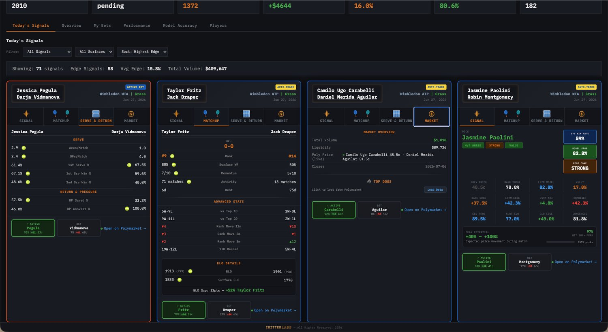
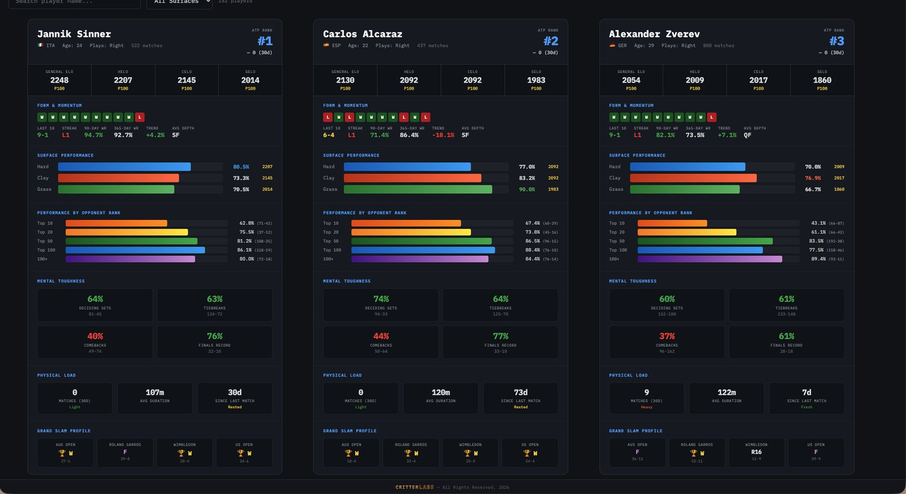
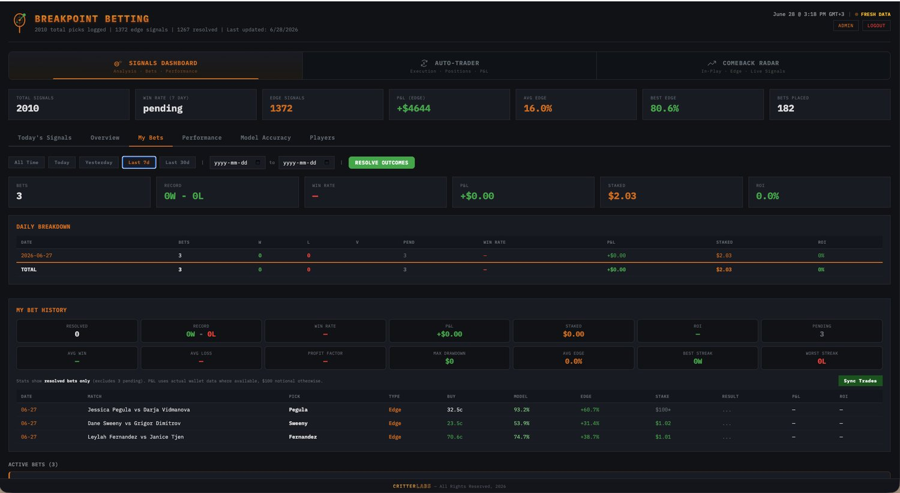
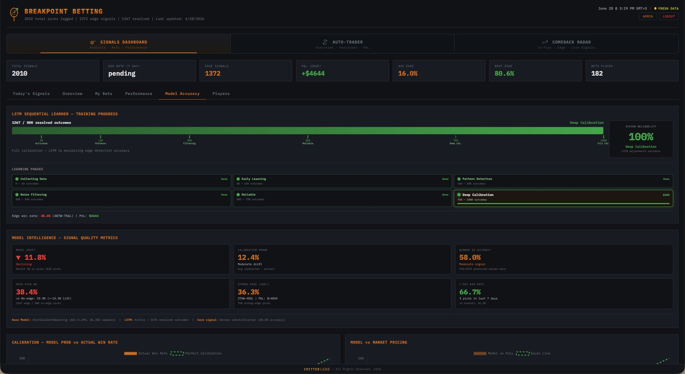
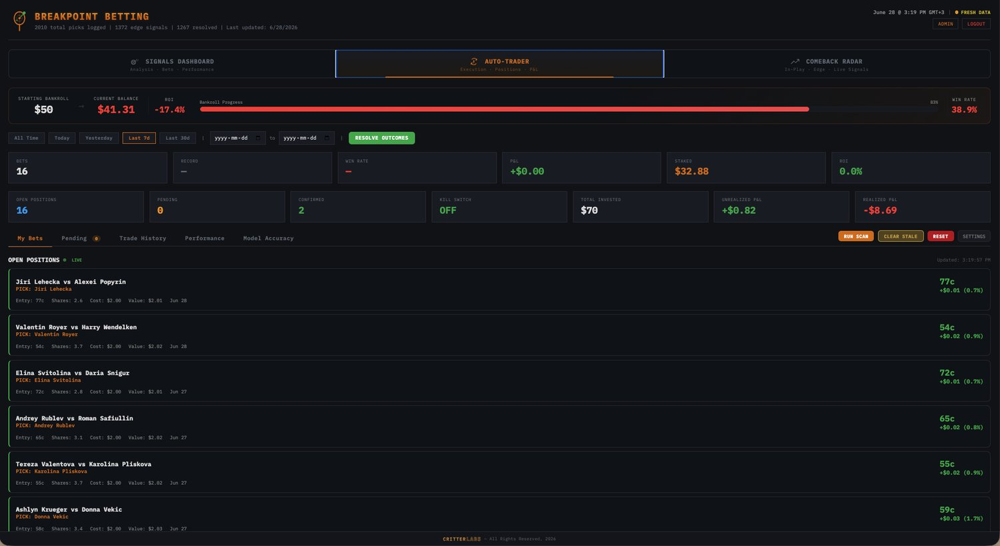

1 / 6The Challenge
Edges in tennis markets appear and vanish fast. Capturing them by hand is impossible — you need a system that reads the matchup, prices the probability, compares it to the market, and acts in the moment, consistently and without emotion.
What We Built
A tennis betting system used on Polymarket. It pulls a range of tennis feeds — rankings, surface form, head-to-head, and live match data — to build each matchup, then combines a base model and an LSTM into a single edge score. When the edge clears the bar, it places the bet on Polymarket automatically.
How It Works
The dashboard surfaces every signal: model probability, system win rate, Elo and surface-Elo edges, Kelly sizing, and a consensus read — per match, sortable by edge. Behind it, the auto-trader executes qualifying signals end to end, while a performance layer tracks P&L, win rate, and model accuracy so the system can be measured and tuned.
The Outcome
A hands-off betting operation: feeds in, edge scored, bets placed, results tracked — all visible on one screen. The same pipeline (feeds → model → edge → execute → measure) generalizes to any market where speed and discipline beat manual decisions.